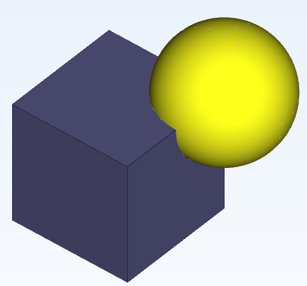
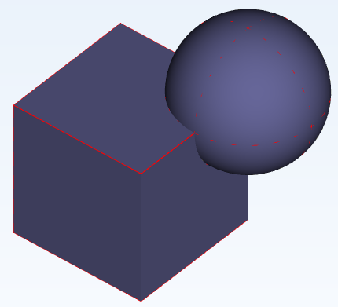
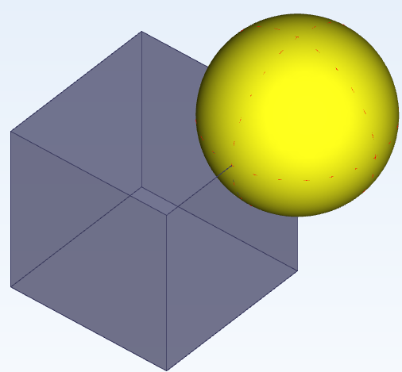
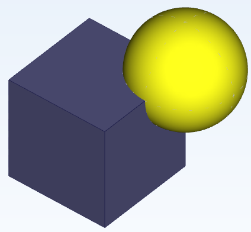
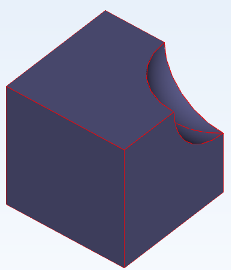
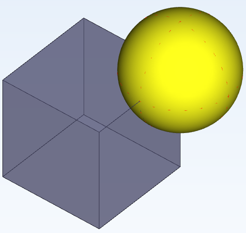
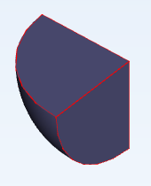
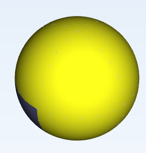
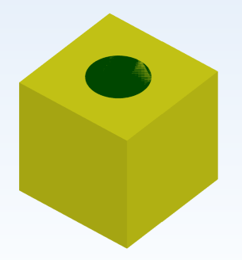
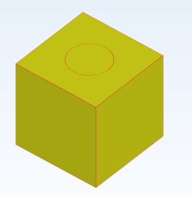

布尔操作
本文涉及模块
布尔运算是创建和修改三维几何体的关键工具。下面详细介绍四种布尔运算：合并、相减、相交和印刻。WavEDA默认进行布尔操作时不保留原物体，可以点击‘Keep’按键保留被操作的原物体。

合并
合并是将两个或多个几何体合并成一个整体。操作步骤
- 在程序树上选择几何，按住crtl键，选择要合并几何(A)和几何(B)。
- 点击主菜单栏“建模”的“布尔运算”的“合并”图标，激活合并操作。
- 生成的新几何体将包含所有选中几何体的形状。新的几何体的颜色和材料与首个选中的物体保持一致。
例子
下面的黄色球体(形状B)将被合并到紫色长方体(形状A)上。先选择紫色长方体(A)，然后选择黄色球体(B)，点击合并按钮。
操作的结果将为以下形状：黄色球体(形状B)将被合并到紫色长方体(形状A)形成一个整体。

如果点击‘Keep’按键，可以看到被合并的球体（形状B）被保留。

相减
相减是从一个几何体中减去一个或多个几何体的部分。
操作步骤
- 在程序树上选择几何，按住crtl键，先选择要进行减去操作的物体（基体），再选中要减去的几何体（工具体）。
- 点击主菜单栏“建模”的“布尔运算”的“相减”图标，激活相减操作。
- 结果是主几何体中减去了工具体的部分。新的几何体的颜色和材料与首个选中的物体保持一致。
例子
下面的黄色球体(形状B)将从紫色长方体(形状A)中减去。先选择长方体(形状A)，然后选择球体(形状B)，然后单击减去按钮。

操作的结果将为以下形状：紫色长方体(形状A)减去黄色球体(形状B)部分。

如果点击‘Keep’按键，可以看到被减去的球体（形状B）被保留。

相交
相交是创建多个几何体重叠部分的新几何体。
操作步骤
- 在程序树上选择几何，按住crtl键，先选择要进行相交操作的两个物体。
- 点击主菜单栏“建模”的“布尔运算”的“相交”图标，激活相交操作。
- 结果是主几何体只保留了相交的部分。新的几何体的颜色和材料与首个选中的物体保持一致。
例子
下面的黄色球体(形状B)与紫色长方体(形状A)相交。先选择长方体(形状A)，然后选择球体(形状B)，然后单击相交按钮。
操作的结果将为以下形状：紫色长方体(形状A)与黄色球体(形状B)相交的部分被保留。

如果点击‘Keep’按键，可以看到被相交的球体（形状B）被保留。

印刻
印刻操作，基体上会印刻出工具面的轮廓。
操作步骤
- 在程序树上选择几何，按住crtl键，选中一个体（基体），再选中一个和基体相接触的一个面（工具面）。
- 点击主菜单栏“建模”的“布尔运算”的“印刻”图标，激活印刻操作。
- 在主几何体出现了工具体的轮廓。
例子
下图中黄色的正方体为基体(形状A)，绿色的圆面(形状B)为工具面，使用‘印刻’。

操作的结果将为以下形状：黄色正方体(形状A)上印刻出了圆形(形状B)的轮廓。

如果点击‘Keep’按键，可以看到被印刻的圆面（形状B）被保留。